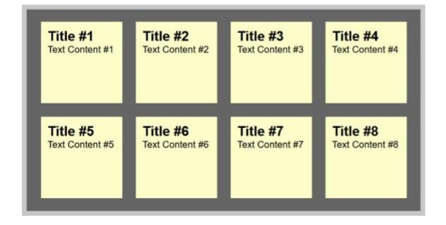

Create a Sticky Note Effect in 5 Easy Steps With CSS3 and HTML5
by Chris Heilmann
27 Jan 2021
Difficulty: Intermediate
Length: Medium
Languages:

In this tutorial, you'll learn how to transform an HTML list into a wall of "sticky
notes" that look and work like the following:
The effect is built up gradually and works on all up-to-date browsers like
Chrome, Safari, Firefox, and Opera. Older browsers simply get some yellow
squares.
1. Step 1: The HTML and Basic Squares
We will be using some common CSS properties that work across all
browsers. As we are using HTML5 for the effect, the basic HTML of our
sticky notes is an unordered list with a link containing all the other
2. Step 2: Drop Shadows and Scribbly Font
Now it's time to add a drop shadow to the notes to make them stand out and
to use a scribbly, hand-written font as the note font. For this we use Google Fonts
and the fonts they provide us with, called "Reenie Beanie" and "Lato".
3. Step 3: Tilting the Notes
Both the tilting of the notes and the zooming we'll add in the next step were
already explained in the past, in this article by Zurb. So big thanks to them
for publishing this trick.
In order to tilt an element, you use the transform:rotate property of CSS3,
again adding the prefix for each of the browsers:

Apple never showed intentions of racing the Nexus 7 to the bottom in the tablet game, and the iPhone 5c is proof that it won't do that in the phone arena, either
Infographic by Troy Dunham for Engadget
Kebudayaan Indonesia yang multikultur seperti itu, ketika dikaji dari sisi dimensi waktu, dapat
dibagi pula pengertiannya :
-
Pertama, kebudayaan (Indonesia) adalah kebudayaan yang sudah terbentuk.
-
Kedua, kebudayaan (Indonesia) adalah kebudayaan yang sedang membentuk.
-
Ketiga, adalah kebudayaan (Indonesia) adalah kebudayaan yang direncanakan untuk
dibentuk
-
10 Cara Membuat Denah Rumah Minimalis
- Karakteristik Membuat Denah Rumah yang Ideal
- Memilih Model Rumah (Jumlah Lantai)
- Mengumpulkan Inspirasi dan Referensi
- Buat Program Ruang untuk Denah Rumah
- Mulai Membuat Sketsa Denah Rumah dengan Garis
- Berikan Detail Denah Rumah dan Mulai Penataan Perabot pada Denah Rumah
- Lakukan Uji Coba dan Buat Altenatif Denah Rumah
- Evaluasi Kembali Denah Rumah yang Telah Kamu Buat
- Alternatif Denah Rumah Terbaik
- Membuat Denah dengan Aplikasi Autocad
- Langkah-Langkah Membuat Denah Rumah
- Membuat Daftar Aktivitas
- Menentukan Jumlah Ruangan
- Mengukur Lahan
- Mulai Membuat Denah Dasar
- Menggambar Secara Spesifik Jendela dan Pintu
- Memberi Nama Setiap Ruangan
- Menggambar Furnitur Sesuai Letaknya
| JANUARI |
TOTAL |
FEBRUARI |
TOTAL |
KELUAR |
TOTAL |
| MASUK |
MASUK |
JANUARI |
FEBRUARI |
|
|
|
|
|
|
|
|
|
|
|
|
|
|
| Sub Total 1 |
|
|
|
|
|
|
|
|
|
|
|
|
|
|
|
|
| Sub Total 2 |
|
|
| TOTAL |